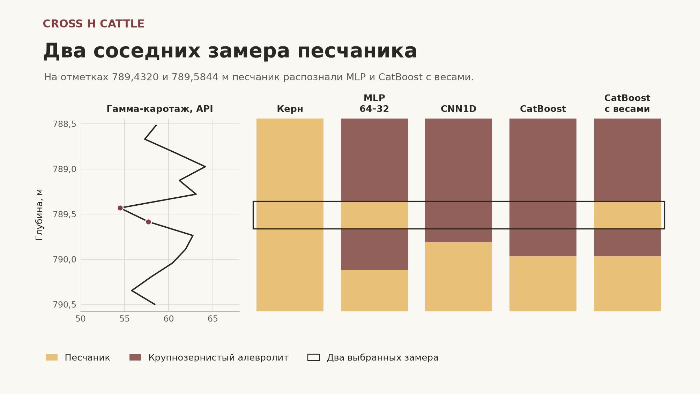

Проверка по керну
Как модели распознают фации
Сравнили пять моделей на одних и тех же скважинах. По всем девяти фациям лучшую Macro F1 получила CNN1D. Больше всего точек песчаника распознала простая полносвязная сеть MLP.
Две проверочные скважины
На CROSS H CATTLE размечен 501 замер, встречаются восемь фаций. На Recruit F9 все 68 замеров относятся к баффлстоуну. Весь песчаник в этой проверке приходится на CROSS H CATTLE.
Macro F1 даёт каждой из девяти фаций одинаковый вес. Два последних столбца показывают число совпадений с керном.
| Модель | Macro F1 | Все фации из 569 | Песчаник из 158 |
|---|---|---|---|
| CNN1D | 0,438 | 273 | 35 |
| CatBoost с весами | 0,413 | 261 | 50 |
| CatBoost на сайте | 0,398 | 255 | 39 |
| MLP 32–16 | 0,345 | 243 | 58 |
| MLP 64–32 | 0,324 | 221 | 47 |
Песчаник на CROSS H CATTLE
По керну все 14 замеров на этом фрагменте относятся к песчанику. На глубинах 789,4320 и 789,5844 м с керном совпали обе MLP и CatBoost с весами. Базовый CatBoost и CNN1D на тех же глубинах указали крупнозернистый алевролит.

Как проходила проверка
Для обучения взяли 2 663 замера с шести скважин. Число эпох для MLP 64–32 и CNN1D выбирали только на этих скважинах. В каждом из трёх разбиений учились на четырёх и проверяли на двух. Медиана лучших эпох дала 10 для обеих сетей.
По объединённым прогнозам трёх разбиений на этих шести скважинах лидировал CatBoost с весами (Macro F1 0,419). У CNN1D получилось 0,394. На двух отложенных скважинах порядок этих моделей поменялся.
CNN1D использует окно из девяти отсчётов. При разрыве или повторе глубины начинается новая последовательность, поэтому окно всегда остаётся внутри одного непрерывного участка. В простой MLP 32–16 сохранили исходные 400 эпох. На первом разбиении и журнал обучения, и отдельный пересчёт дали Macro F1 0,332.
Все пять моделей затем обучили на шести скважинах и проверили на CROSS H CATTLE и Recruit F9. Команда уже изучала эти две скважины. Для проверки переноса на новый разрез нужна ещё одна скважина с независимо описанным керном.
Материалы опыта
В таблице есть глубина в метрах и футах, фация по керну и пять прогнозов для каждого из 3 232 замеров.
Скачать прогнозы по замерам (CSV) Скачать ноутбуки, данные и график (ZIP) Отчёт по скважинам и признакам Исходные эксперименты команды